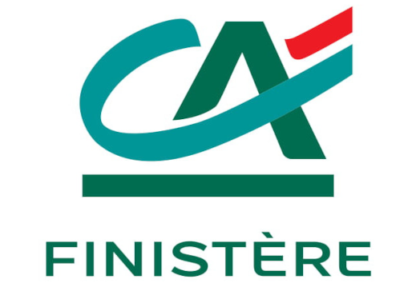

Stage – Crédit Agricole du Finistère : Analyse de données & automatisation
Durant un stage de 3 mois au sein de l’unité Partenaire du Crédit Agricole du Finistère, j’ai participé à l’optimisation d’outils internes de suivi de la conformité clients, dans le cadre du dispositif KYC (Know Your Customer), ainsi qu’à la fiabilisation des données sensibles. Mon travail s’est inscrit dans une logique de qualité, de sécurisation des traitements et de soutien aux métiers de la conformité.
Missions réalisées
🔹 Automatisation et fiabilisation sous Excel VBA
- Développement d’un fichier automatisé pour le suivi de la conformité KYC.
- Génération automatique d’indicateurs et de tableaux croisés dynamiques.
- Intégration de contrôles de saisie (formats, doublons, erreurs) pour fiabiliser les données.
🔹 Reprise et amélioration d’un outil de suivi physique
- Mise à jour d’un fichier de traçabilité d’équipements sensibles.
- Vérification terrain et croisement des données pour fiabiliser l’existant.
- Structuration des informations avec visualisation et contrôles intégrés dans Excel.
🔹 Analyse décisionnelle avec SAP BusinessObjects
- Élaboration de requêtes Web Intelligence pour identifier anomalies et doublons.
- Création de variables calculées et filtres complexes.
- Rédaction de rapports clairs et synthétiques à destination des équipes métiers.
🔹 Anonymisation des données & documentation
- Génération de jeux de données fictives avec Python (
Faker) pour les tests et supports externes. - Rédaction de guides et méthodes d’utilisation des outils Excel/Access pour des profils non techniques.
- Respect des normes internes de confidentialité et de protection des données.
Compétences développées
- Automatisation de tâches répétitives avec Excel VBA et amélioration de processus internes.
- Analyse décisionnelle avec des outils de Business Intelligence comme SAP BO.
- Nettoyage, contrôle et fiabilisation de données dans un contexte sensible (clients, conformité).
- Utilisation de Python pour générer des données fictives et garantir la confidentialité.
- Rédaction de documentation claire pour des utilisateurs non spécialistes.
- Adaptabilité à un environnement bancaire rigoureux, structuré et collaboratif.


Retour à l'accueil